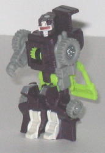
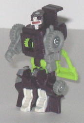

Kobushi
Kobushi

Allegiance : Decepticon, Minicon
Difficulty of Transformation : Very Easy
Color Scheme : Dark purple, gray, light leafy green, and some silver, glittery off-white, and dark metallic purplish red
Individual Rating : 6.7
Kobushi
vs. Landslide
Size
: Mini-Con (2-pack)
Overall Rating
: 6.2
 Kobushi
Kobushi

Allegiance
: Decepticon, Minicon
Difficulty of Transformation
: Very
Easy
Color Scheme
: Dark purple, gray,
light leafy green, and some silver, glittery off-white, and dark metallic
purplish red
Individual Rating
: 6.7
(NOTE: Because this toy is a repaint, this is not a full-blown review. This mainly covers any changes made to the toy and the color scheme, and merely compares it to Armada Dune Runner. For a review on the mold itself, read the review of Armada Dune Runner here .)
Kobushi's scheme of purple,
light green, and gray really isn't appropriate for a sand rail, as it'd
stick out like a sore thumb in any arid area. However, that aside, this
color scheme rocks! The dark purple goes exceedingly well with the light
green, and are very dark, Decepticon-y colors. The gray also goes very
well with the other colors, and there's not enough of it to make the toy
drab, either. In addition, the white and silver paint apps contrast VERY
nicely with the purple, and the purplish-red visor paint app makes the
mold look bit more evil than it otherwise would have-- nice.
No mold changes have
been made to Kobushi, but like the other members of his team, he has a
Decepticon symbol painted over his molded-on Minicon symbol, which is really
dumb...
 Landslide
Landslide
Allegiance
: Autobot, Minicon
Difficulty of Transformation
: Easy
Color Scheme:
Light milky gray,
yellow, black, dull rusty orange, and some metallic gunmetal gray
Individual Rating
: 5.7
(NOTE: Because this toy is a repaint, this is not a full-blown review. This mainly covers any changes made to the toy and the color scheme, and merely compares it to Armada Buzzsaw. For a review on the mold itself, read the review of Armada Buzzsaw here .)
Landslide's overall color
scheme fits together fairly well-- the light gray, black, and orange go
together significantly better than either of Landslide's teammates' color
schemes. The orange looks especially good against the yellow. Landslide
also sports noticeably more paint apps than his teammates, with some especially
nice black apps on his arms and chest. As on his other teammates, however,
I don't like the shade of yellow used-- it's a rather obnoxious shade,
and looks rather chinsy in quality (although it's actually not).
No mold changes have
been made to Landslide, though an Autobot symbol tampo has been added to
the back of his right arm.
Kobushi vs. Landslide
is the best Vs. pack for wave two of the size category, with each Minicon
definitely winning out as the best-looking among their teammates. Altough
I probably recommend Buzzsaw's color scheme from the
Armada
Road Wrecker Team
a bit more than Landslide's, Kobushi definitely has
the best color scheme his mold has been given so far, so overall this pack's
worth picking up if you like Minicons.
Review by Beastbot